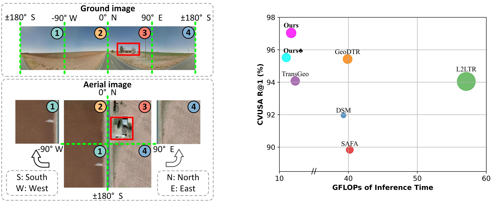
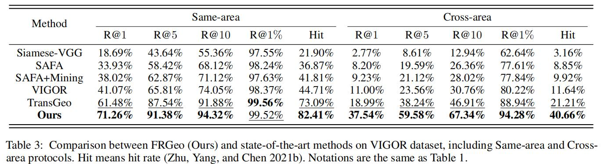
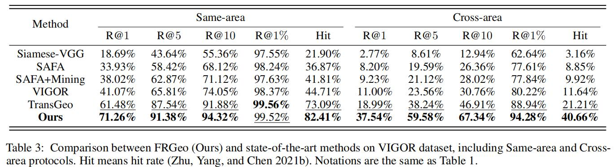

Abstract
Cross-view geo-localization holds significant potential for various applications, but drastic differences in viewpoints and visual appearances between cross-view images make this task extremely challenging. Recent works have made notable progress in cross-view geo-localization. However, existing methods either ignore the correspondence between geometric spatial layout in cross-view images or require high costs or strict constraints to achieve such alignment. In response to these challenges, we propose a Feature Recombination Module (FRM) that explicitly establishes the geometric spatial layout correspondences between two views. Unlike existing methods, FRM aligns geometric spatial layout by directly recombining features, avoiding image preprocessing, and introducing no additional computational and parameter costs. This effectively reduces ambiguities caused by geometric misalignments between ground-level and aerial-level images. Furthermore, it is not sensitive to frameworks and applies to both CNN-based and Transformer-based architectures. Additionally, as part of the training procedure, we also introduce a novel weighted (B+1)-tuple loss (WBL) as optimization objective. Compared to the widely used weighted soft margin ranking loss, this innovative loss enhances convergence speed and final performance. Based on the two core components (FRM and WBL), we develop an end-to-end network architecture (FRGeo) to address these limitations from a different perspective. Extensive experiments show that our proposed FRGeo not only achieves state-of-the-art performance on cross-view geo-localization benchmarks, including CVUSA, CVACT, and VIGOR, but also is significantly superior or competitive in terms of computational complexity and trainable parameters.
Motivation and Effects
Quantitative Results
 

Qualitative Results
Visualization Analysis
Feature Embedding Visualization

Retrieval Visualization